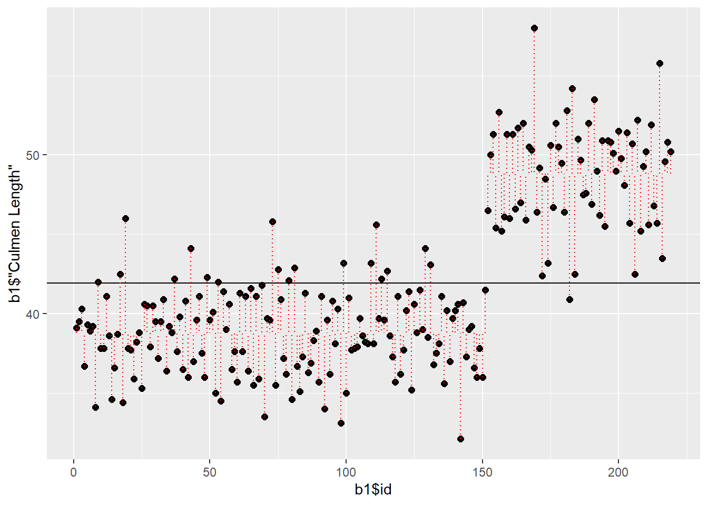
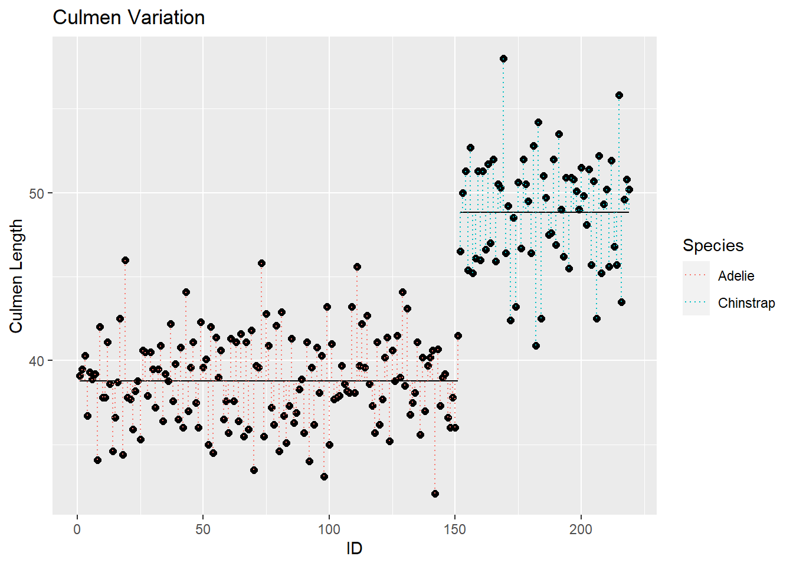
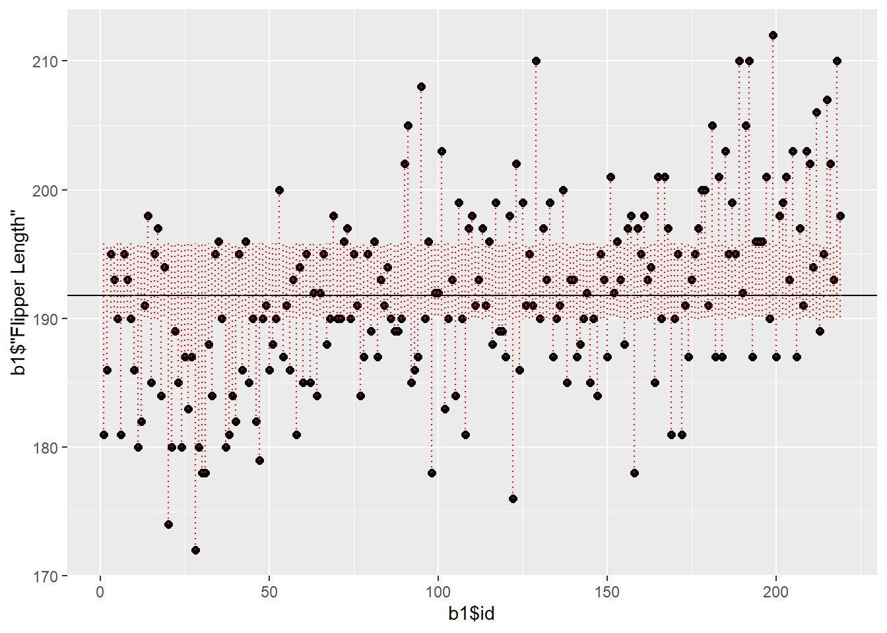

knitr::read_chunk('analysiscode.R')Palmer Penguins Analysis
Introduction
Source Data and Code
This Quarto file loads the results of a multivariate morphological analysis of the Palmer Penguins dataset. The data used for this project was previous cleaned by the author and can be accessed through https://github.com/cusisom/cusimano-rclass-project. In addition to the original data and r code for cleaning and analysis, this github site contains all of the figures and tables used in this summary as well as the finished manuscript for the project. For more information on the associated repo, follow the link provided above and refer to the site README.
While the script for used by this Quarto file contains all of the analysis, the analysis script has also been segmented into four distinct sections in the Code_sections folder for individual review (Data Summary, Body Mass Analysis, Sexual Dimorphism, and Analysis of Variance). These sections are also clearly delineated in the primary analysis code (analysiscode.R).
Analysis
The focus of this study is one morphological variation in the three penguin species reviewed in the dataset. While the first section of this overview details a summary of all of the Palmer Penguins data, the following sections omit information which pertains to Carbon 13 and Nitrogen 15.
The primary sections of this review pertain to three interrelated research questions. These sections/questions are as follows:
I. Body Mass Distribution: Identifying areaas of Interspecific and Intraspecific Variation
II. Analysis of Sexual Dimorphism
III. Differentiating between Adelie and Chinstrap penguins. Shape Profile Analysis####Note about statistics
Much of the difficulty experienced throughout this project comes from the author’s lack of statistical training. I opted to take this course this term instead of a statistics course due to unlikely event of it being offered again during my time at UH. While I did my best to apply the necessary statistical analyses and appropriately interpret the results, I am not currently confident in my application.
Setup
To run this R script, users must install and require a variety of packages. Our template for this project included some of what is seen below but packages such as report(), patchwork(), and Ggally() were added by the author. There are many new file paths also developed by the author to funnel the various analysis products to the right location.
Finally, as was done for the data cleaning output, this quarto makes use of code chunks and therefore required the use of the knitr read chunk function.
Load needed packages and filepaths.
#load needed packages. make sure they are installed.
require(ggplot2) #for plotting
require(magrittr) #for piping
require(knitr) #for formatting output
require(dplyr)
require(report)
require(patchwork) #for grouping plots together
require(GGally)
#path to data and results
data_path <- "../../Data/Processed_data/"
results_path <- "../../Results/"
figures_path <- "../../Results/Figures/"
stats_path <- "../../Results/Statistics/"
PC_path <- "../../Results/Statistics/Princomp/"Load custom function to facilitat efficient path funneling.
# function to paste path to output filenames
addpath <- function( filename, path=data_path ) {
location <- paste( path, filename, sep="")
return( location )
}Load the data.
# load data.
dat <- readRDS( addpath("penguins.rds", data_path) )Summary Table
With the data cleaned in the last project, it is worth displying here the information that is being worked with in this analysis. For ease of access and brief review, I am utilizing the skimr function but setting the information up in a dataframe ratherr than a tibble. With this I can more easily illustrate different chunks of information.
# create summary table of the data using skimr to use in paper
# variables, sample size, mean, standard error
sk <- skimr::skim(dat) # save skim object
sk <- as.data.frame(sk) # save as data.frame
head(sk) # see the variable names skim_type skim_variable n_missing complete_rate factor.ordered
1 factor Species 0 1.0000000 FALSE
2 factor Island 0 1.0000000 FALSE
3 factor Sex 9 0.9734513 FALSE
4 numeric Culmen Length 0 1.0000000 NA
5 numeric Culmen Depth 0 1.0000000 NA
6 numeric Flipper Length 0 1.0000000 NA
factor.n_unique factor.top_counts numeric.mean numeric.sd
1 3 Ade: 151, Gen: 120, Chi: 68 NA NA
2 3 Bis: 164, Dre: 124, Tor: 51 NA NA
3 2 MAL: 168, FEM: 162 NA NA
4 NA <NA> 43.89705 5.470566
5 NA <NA> 17.17345 1.968781
6 NA <NA> 200.79056 14.054430
numeric.p0 numeric.p25 numeric.p50 numeric.p75 numeric.p100 numeric.hist
1 NA NA NA NA NA <NA>
2 NA NA NA NA NA <NA>
3 NA NA NA NA NA <NA>
4 32.1 39.20 44.4 48.5 59.6 ▅▇▇▆▁
5 13.1 15.65 17.3 18.7 21.5 ▅▅▇▇▂
6 172.0 190.00 197.0 213.0 231.0 ▂▇▃▅▂nrows <- dim(dat)[1] # total number of rows
sk$N <- nrows - sk$n_missing # sample size of each variablePublishing Summary Table
While the above summary data is informative and useful for this overview, it is not in a format that is ready for publication. Using the following code, I am able to specify the summary statistics that are most useful for quick reference, rename the columns, and, using knitr, transform the table into a presentation format. This will be combined with the results=asis command to maintain a polished format when applicable.
Note-
I tried applying the knitr.kable method for some of my analytical results but it would change some of the values. I’m sure there is some coding trick to make this work better, I couldn’t quite figure it out.
# select only the variable, N, mean, sd, and category counts
sk.table <- sk[c("skim_variable", "N", "numeric.mean", "numeric.sd", "factor.top_counts")]
names(sk.table) <- c("Variable", "N", "Mean", "SE", "Counts") # rename SD as SE
sk.table$SE <- sk.table$SE/sqrt(sk.table$N) # calculate SE
options(knitr.kable.NA = "")
knitr::kable(sk.table, digits=2)| Variable | N | Mean | SE | Counts |
|---|---|---|---|---|
| Species | 339 | Ade: 151, Gen: 120, Chi: 68 | ||
| Island | 339 | Bis: 164, Dre: 124, Tor: 51 | ||
| Sex | 330 | MAL: 168, FEM: 162 | ||
| Culmen Length | 339 | 43.90 | 0.30 | |
| Culmen Depth | 339 | 17.17 | 0.11 | |
| Flipper Length | 339 | 200.79 | 0.76 | |
| Body Mass | 339 | 4196.17 | 43.62 | |
| Delta 15 N | 327 | 8.74 | 0.03 | |
| Delta 13 C | 328 | -25.68 | 0.04 |
# save summary table
saveRDS(sk.table, file = addpath("summary_table.rds", results_path))Body Mass Distribution
Interspecific and Intraspecific Varition
We closed out our first project by creating bivariate plots for all of the continuous variables in our dataset. Each of the morhpological data was specifically plotted against body mass to develop an idea of how these features correlated with overall size. This series of plots is designed to summarize that data.
# Generate bivariate plot of Culmen Depth~Body Mass
# Use geom_smooth to add in the correlation line
#Subtitle instead of title for easier small font
x <- dat |> ggplot(aes(dat$'Body Mass', dat$'Culmen Depth', color=Species, fill=Species)) +
geom_point() +
geom_smooth(method=lm, se = FALSE) +
labs(
subtitle="Body Mass by Culmen Depth",
x='Body mass (mm)', y='Culmen Depth (mm)',
) +
scale_color_brewer(palette="Dark2")
# Generate bivariate plot of Culmen Length~Body Mass
x1 <- dat |> ggplot(aes(dat$'Body Mass', dat$'Culmen Length', color=Species, fill=Species)) +
geom_point() +
geom_smooth(method=lm, se = FALSE) +
labs(
subtitle="Body Mass by Culmen Length",
x='Body mass (mm)', y='Culmen Length (mm)',
) +
scale_color_brewer(palette="Dark2")
# Generate bivariate plot of Flipper Length~Body Mass
x2 <- dat |> ggplot(aes(dat$'Body Mass', dat$'Flipper Length', color=Species, fill=Species)) +
geom_point() +
geom_smooth(method=lm, se = FALSE) +
labs(
subtitle="Body Mass by Flipper Length",
x='Body mass (mm)', y='Flipper Length (mm)',
) +
scale_color_brewer(palette="Dark2")
# Generate histogram showing the distribution of Body Mass for each species
x3 <- ggplot(data = dat, aes(x = dat$'Body Mass')) +
geom_histogram( aes(fill=Species), alpha=.3) +
labs(
subtitle="Body Mass",
x='Body Mass (g)', y='Count',
color='Species'
)
#Show these plots in a single grid.
#Allows them to be considered together.
#Need specific package to create this layout
require(patchwork)
#With patchwork I can use the plus sign (+) to combine the plots in a grid
#Specify the number of column you want
#Use "collect" to gather the common key for the plots and display it independantly instead of with each.
cor_plots <- x + x1 + x2 + x3 + plot_layout(ncol=2, guides = "collect")
cor_plotsI am first interested in the size distribution of the Palmer Penguins. I begin by examining the inter- and intraspecific variation in body mass. This is represented in the histogram in the bottom right of the above figure.
This distribution becomes much clearer with the violin plot below. Besides following the pattern seen in the summary plots where the Gentoo Penguins appear to be outliers, it is interesting to observe a seemingly smaller range in body mass for the Chinstrap relative to the Gentoo and Adelie Penguins. My first question concerns this apparent difference in body mass variation for each species. I explore this question by considering the role of sexual dimorphism.
A reasonable explanation for the narrower range in body mass for Chinstrap Penguins would that they reflect less sexual size dimorphism than the other two species. To first test the hypothesis that these three species are indeed sexually dimorphic in body mass I replot the data and distribute it by Sex.
p2 <- dat %>%
ggplot( aes(x=Species, y=dat$'Body Mass', col=Species)) +
geom_violin(trim=FALSE) +
geom_jitter() +
labs(
title="Body Mass by Species",
x='Species', y='Body Mass (g)',
color='Species'
) +
scale_color_brewer(palette="Dark2")
p2First I need to remove the NA values.
#The NA values add an extra variable that complicates the image. Subset out NA's.
d1 <- dat[ !is.na(dat$"Sex"), ]
#Plot the data without NA values to see distribution.Now I can plot.
p4 <- d1 %>%
ggplot(aes(x=Species, y=d1$'Body Mass', fill=Sex)) +
geom_violin(trim=FALSE) +
labs(
title="Body Mass by Species and Sex",
x='Sex', y='Body Mass (g)',
color='Species'
) +
scale_fill_brewer(palette="Dark2")
p4
The plot shows clear dimorphism with Gentoo Penguins. It also illustrates stronger dimorphism in Adelie than Chinstrap populations but it is more subtle. After determining that the Palmers Penguins are sexually dimorphic, I want to know if the different species differ in the degree of mass specific Sexual Size Dimorphism.
Analysis of Sexual Size Dimorphism
To get a better idea of this discrepancy in Body Mass, I want to test the degree of sexual size dimorphism statistically. The goals here are to 1) illustrate that each of these three penguin species is significantly Sexually Dimorphic in body mass and 2) illustrate the relatively lower degree of dimorphism in the Chinstrap penguins. This second point will support the idea of the narrower body mass distribution in Chinstrap penguins reflecting reduced sexual size dimorphism. While this point might be self-evident, it is still interesting to note the correlation between sexual size dimorphism within a species and overall range in body mass.
To support my hypotheses, I first illustrate summary data on the differences in Body Mass and then test the significance of this difference with a Welch’s T-test. I replicate this process for each species.
Adelie Penguins
For the Adelie Penguins I first subset the species and remove NA values.
Summary
With the NA values removed, I first get an idea of the mean size differences between females and males. I installed the report package to help me summarize the data.
#Subset the Species
d2 <- dat[dat$Species=="Adelie", ]
#Remove the NA values
d2 <- d2[ !is.na(d2$"Sex"), ]
#report data grouping by Sex and Body Mass
Adelie_report <- report_sample(d2, group_by = "Sex", select = "Body Mass")
print(Adelie_report)# Descriptive Statistics
Variable | FEMALE (n=73) | MALE (n=73) | Total (n=146)
----------------------------------------------------------------------------
Mean Body Mass (SD) | 3368.84 (269.38) | 4043.49 (346.81) | 3706.16 (458.62)These means seem to pretty clearly indicate sexual dimorphism but I will run it through a Welch’s T-test to investigate statistical significance.
T-test
To test the means of each population (Male and Female) I need to filter the population into individual vectors. From there I can test the means through a t-test.
female <- d2 %>%
filter(Sex == "FEMALE")
male <- d2 %>%
filter(Sex == "MALE")
# Run a two sample t-test after filtering the data
t.test.Ad <- t.test(female$'Body Mass', male$'Body Mass')
print(t.test.Ad)
Welch Two Sample t-test
data: female$"Body Mass" and male$"Body Mass"
t = -13.126, df = 135.69, p-value < 2.2e-16
alternative hypothesis: true difference in means is not equal to 0
95 percent confidence interval:
-776.3012 -573.0139
sample estimates:
mean of x mean of y
3368.836 4043.493 The p-value supports the significance of Sexual Size Dimorphism in Adelie Penguins. I will pay attention to the t-value (-13.126) for comparison with the other species’.
Gentoo Penguins
As noted above, the Gentoo penguins are subjected to the same round of tests as the Adelie penguins.
Summary
#Subset the Species and remove NA values
d3 <- dat[dat$Species=="Gentoo", ]
d3 <- d3[ !is.na(d3$"Sex"), ]
#Same process as above
Gentoo_report <- report_sample(d3, group_by = "Sex", select = "Body Mass")
print(Gentoo_report)# Descriptive Statistics
Variable | FEMALE (n=55) | MALE (n=61) | Total (n=116)
----------------------------------------------------------------------------
Mean Body Mass (SD) | 4671.36 (285.39) | 5484.84 (313.16) | 5099.14 (505.80)This data seems to reflect an even greater degree of dimorphism than seen in Adelie Penguins. Next is the statstical test.
T-test
# Filter the data
female <- d3 %>%
filter(Sex == "FEMALE")
male <- d3 %>%
filter(Sex == "MALE")
# Run the analysis
t.test.Gt <- t.test(female$'Body Mass', male$'Body Mass')
print(t.test.Gt)
Welch Two Sample t-test
data: female$"Body Mass" and male$"Body Mass"
t = -14.638, df = 113.98, p-value < 2.2e-16
alternative hypothesis: true difference in means is not equal to 0
95 percent confidence interval:
-923.5647 -703.3802
sample estimates:
mean of x mean of y
4671.364 5484.836 Just as above, the p-value corroborates the violin plot distribution for Sexual Size Dimorphism. The t-value here (-14.638) is greater than that of Adelie (-13.126).
(I suggest that the value is greater despite the number actually being smaller. I have very little background in statistics but from what I have gathered, negative and positive values do not weigh on the interpretation of t-values).
Chinstrap Penguins
The final round of tests is run on the Chinstrap Penguins. My assumption is that both the p- and t- values will be smaller than those of the other two species.
Summary
#Subset the Species
d4 <- dat[dat$Species=="Chinstrap", ]
#There is no need to remove NA values for this species
#Check by:
d4$Sex [1] FEMALE MALE MALE FEMALE MALE FEMALE FEMALE MALE FEMALE MALE
[11] FEMALE MALE FEMALE MALE FEMALE MALE MALE FEMALE FEMALE MALE
[21] FEMALE MALE FEMALE MALE FEMALE MALE FEMALE MALE FEMALE MALE
[31] FEMALE MALE FEMALE MALE MALE FEMALE FEMALE MALE FEMALE MALE
[41] MALE FEMALE MALE FEMALE FEMALE MALE FEMALE MALE MALE FEMALE
[51] FEMALE MALE FEMALE MALE FEMALE MALE FEMALE MALE MALE FEMALE
[61] MALE FEMALE FEMALE MALE FEMALE MALE MALE FEMALE
Levels: FEMALE MALE#Report on the data
Chinstrap_report <- report_sample(d4, group_by = "Sex", select = "Body Mass")
print(Chinstrap_report)# Descriptive Statistics
Variable | FEMALE (n=34) | MALE (n=34) | Total (n=68)
----------------------------------------------------------------------------
Mean Body Mass (SD) | 3527.21 (285.33) | 3938.97 (362.14) | 3733.09 (384.34)It’s looking like a much narrower size difference.
T-test
#Filter the data
female <- d4 %>%
filter(Sex == "FEMALE")
male <- d4 %>%
filter(Sex == "MALE")
# Run the analysis
t.test.Cs <- t.test(female$'Body Mass', male$'Body Mass')
print(t.test.Cs)
Welch Two Sample t-test
data: female$"Body Mass" and male$"Body Mass"
t = -5.2077, df = 62.575, p-value = 2.264e-06
alternative hypothesis: true difference in means is not equal to 0
95 percent confidence interval:
-569.7903 -253.7391
sample estimates:
mean of x mean of y
3527.206 3938.971 The Chinstrap data represented here, while still showing a significance in dimorphism, shows a much lower t-value (-5.2077) than the two other species tested.
Sexual Size Dimorphism Conclusions
It looks like the data supports my assumptions. The Chinstrap Penguins present much differently than the other species in terms of Sexual Dimorphism. Both the p- and t- values noticebly differed. I wanted to test the statistical difference between the t-test results, but I am not sure how to do that and I am too short on time for this assignment to figure it out. Regardless, suggesting that the overall reduced body mass range in Chinstrap Penguins relative to Adelie and Gentoo Penguins as an outcome of reduced sexual dimorphism seems like a plausible explanation.
Differentiating between Adelie and Chinstrap penguins on Dream Island
Despite the differences in sexual dimorphism, the Chinstrap and Adelie Penguins seem to cluster closely in body mass. With their geographic overlap on Dream island, my next question concerns the morphological distinction between the two species. I consider whether, with the current available data, I can see the justification for differentiating the two populations as different species.
In examining photos of the two birds, the phenotypic differences are distinct. As a paleontologists, however, I do not often have the ability to examine soft tissue. Thus, for my own purposes, I’d like to see just how vague physical measurements can be in phylogenetic pursuits. I will acknowledge here that the measurements provided to us here were taken from specimens in the flesh, and so the results of this inquiry will not directly translate to my interests, but it is a starting point.
This final question seeks to determin if there are proportional differences in Flipper and Culmen dimensions for the two penguin species that might help to differentiate them.
I will note here that I did not come into this class with a statistics background. This is on the docket for next term. With that said, it seemed like one potential means of answering this question was to run a principal components analysis for each of the morphological variables given but omitting body mass. And so, this became my agenda.
Summary Data for Adelie and Chinstrap Penguins
I begin this process by removing Gentoo Penguins from the analysis.
#Subset out Gentoo
b1 <- dat[!dat$Species == "Gentoo", ]
#Drop unused levels from analysis (otherwise Gentoo continues to appear, just with no data)
b1 <- droplevels(b1)
#Run a summary to get a quick look at the data means for each species
c1 <- b1 %>%
select(-starts_with("Delta")) %>%
group_by(Species) %>%
report(exclude = "b1$Gentoo") %>%
summary()
c1The data contains 219 observations, grouped by Species, of the following 7
variables:
- Adelie (n = 151):
- Island: 3 levels, namely Biscoe (n = 44), Dream (n = 56) and Torgersen (n =
51)
- Culmen Length: Mean = 38.79, SD = 2.66, range: [32.10, 46]
- Culmen Depth: Mean = 18.35, SD = 1.22, range: [15.50, 21.50]
- Flipper Length: Mean = 189.95, SD = 6.54, range: [172, 210]
- Body Mass: Mean = 3700.66, SD = 458.57, range: [2850, 4775]
- Sex: 2 levels, namely FEMALE (n = 73), MALE (n = 73) and missing (n = 5)
- Chinstrap (n = 68):
- Island: 3 levels, namely Biscoe (n = 0), Dream (n = 68) and Torgersen (n = 0)
- Culmen Length: Mean = 48.83, SD = 3.34, range: [40.90, 58]
- Culmen Depth: Mean = 18.42, SD = 1.14, range: [16.40, 20.80]
- Flipper Length: Mean = 195.82, SD = 7.13, range: [178, 212]
- Body Mass: Mean = 3733.09, SD = 384.34, range: [2700, 4800]
- Sex: 2 levels, namely FEMALE (n = 34) and MALE (n = 34)Before plotting each variable, I wanted to get a broad graphical look at the interspecific variation in the variables I hadn’t yet tested.
This task was accomplished by installing the GGally package. Using GGally, I generated bivariate plots for all morphological variables other than Body Mass.
require(GGally)
# Select the factor and continuous variables to plot.
c2 <- b1 %>%
select(Species, ends_with("th")) %>%
GGally::ggpairs(aes(color = Species)) +
scale_color_brewer(palette="Dark2") +
scale_fill_brewer(palette="Dark2")
c2From this set of images it looks like the starkest differences between the two penguin species are the Culmen Length and the Flipper Length, with Culmen Depth being fairly negligable. I want to be sure that these figures represent statistically powerful data though and so I run the Principal Components analysis to determine which variables are most significant.
Principal Components Analysis
#Remove Body Mass by selecting for other variables only.
#Run Principal Components analysis with princomp function.
b2 <- b1 %>%
select("Culmen Length", "Culmen Depth", "Flipper Length")
b2.pc <- princomp(b2, scores=T)
summary(b2.pc)Importance of components:
Comp.1 Comp.2 Comp.3
Standard deviation 8.0077579 4.2638789 1.09283532
Proportion of Variance 0.7679623 0.2177347 0.01430301
Cumulative Proportion 0.7679623 0.9856970 1.00000000pcsum <- summary(b2.pc)
print(pcsum)Importance of components:
Comp.1 Comp.2 Comp.3
Standard deviation 8.0077579 4.2638789 1.09283532
Proportion of Variance 0.7679623 0.2177347 0.01430301
Cumulative Proportion 0.7679623 0.9856970 1.00000000This analysis shows pretty clearly that the most variation is found in pc1 (~77%) with a fairly steep drop with pc2 (~22%) and negligable scores for pc3.
#Illustrate PC Loadings
loadings(b2.pc)
Loadings:
Comp.1 Comp.2 Comp.3
Culmen Length 0.504 0.863
Culmen Depth -0.998
Flipper Length 0.861 -0.505
Comp.1 Comp.2 Comp.3
SS loadings 1.000 1.000 1.000
Proportion Var 0.333 0.333 0.333
Cumulative Var 0.333 0.667 1.000pcload <- loadings(b2.pc)
print(pcload)
Loadings:
Comp.1 Comp.2 Comp.3
Culmen Length 0.504 0.863
Culmen Depth -0.998
Flipper Length 0.861 -0.505
Comp.1 Comp.2 Comp.3
SS loadings 1.000 1.000 1.000
Proportion Var 0.333 0.333 0.333
Cumulative Var 0.333 0.667 1.000PC1 illustrates that most of the variation with the sample is found in Flipper Length. Second to that is the distribution of Culmen Length Values. Importantly, it does not seem from this that Culmen Depth factors into the variation within this population.
Because Culmen Depth is a negligable variable in this analysis, I focus on pc1 and pc2. The plot shows variation and when demarcating the species, shows distinct groupings.
#Because Culmen Depth is a negligable variable in this analysis, I focus on pc1 and pc2.
#Plot PC1~PC2
pc1 <- b2.pc$scores[,1]
pc2 <- b2.pc$scores[,2]
pc3 <- b2.pc$scores[,3]
plot(pc2 ~ pc1, col=b1$Species, cex=2, pch=16)#ANOVA
#Illustrate variance in Culmen Length
#Generate dataset mean value and specific species meansThis illustrates that there are distinct proportional differences in Culmen Length and Flipper Length between the two species. Finally, I will run an ANOVA for these variables.
Analysis of Variance
My last step is to investigate how much these variables (Culmen Length and Flipper Length) vary by species. I begin with Culmen Length.
Culmen Length Variance
My goal is to identify whether the two species are significantly different in Culmen Length. I start by generating an index column for the data. I calculate the mean of the scores for the whole dataset as well.
#Scale by individual data points by assigning IDs to each.
b1 <- cbind(b1, id = 1:length(b1$Species))
#Establish group mean
yhat <- mean(b1$'Culmen Length') The next step was to differentiate the mean Culmen Length value for each species under investigation. I worked on this for A LONG time and could not get it to work. I followed the example given in the Univariate Stats lecture, followed notes from an in person meeting with the professor, and followed the instructions from multiple online sources. I altered the code below in many ways but could never get r to generate separate species means. At the end of the day, I had to move forward. This ultimately changes how my plots turned out.
#This is supposed to differentiate the species means
#CAN'T GET TO WORK
spmeans <- b1 %>% group_by(Species) %>%
summarise(
sl = mean(`Culmen Length`),
n = length(id),
minid = min(id),
maxid = max(id)
)
spmeans# A tibble: 2 × 5
Species sl n minid maxid
<fct> <dbl> <int> <int> <int>
1 Adelie 38.8 151 1 151
2 Chinstrap 48.8 68 152 219#Species means are only representing the entire sample. Can't get it to differentiate.
#Proceed anyways
#Merge the means into the original datasetI first plot the data for the whole assemblage. Especially when embedding the variance lines, there is a pretty distinct difference in how the data is clustered.
l <- merge(b1, spmeans)
#Plot data with means
z <- b1 %>% ggplot(aes( x = b1$id, y = b1$'Culmen Length', group=Species))
s <- z + geom_point( size=2) +
geom_hline( aes(yintercept = mean(b1$'Culmen Length')) ) +
geom_segment( data=l, aes( x = l$id, y = l$'Culmen Length', xend = id, yend = sl), color="red", lty = 3)
s 
The next step was to illustrate the species differences. I was successful in showing where the different species lie on the plot but, again, I could not illustrate the differences in Culmen Length mean for each species.
#Highlight the species differences in variance from mean
r <- z + geom_point(size=2) +
geom_segment(data=spmeans, aes(x = minid, y = sl, xend = maxid, yend = sl, group=Species)) +
geom_segment( data=l, aes( x = id, y = l$"Culmen Length", xend = id, yend = sl, color=Species), lty = 3)
r
While my plot did not work out quite the way I wanted it to, I was successful in illustrating that the Adelie and Chinstrap penguins significantly differ in the distribution of Culmen Length values.
This is highlighted statistically through the ANOVA below.
#Run ANOVA to establish statistical difference
lm.fit.c <- lm(b1$'Culmen Length' ~ b1$Species, data=b1)
anova.table.c <- anova(lm.fit.c)
rownames(anova.table.c) = c("Species", "Residuals")
print(anova.table.c)Analysis of Variance Table
Response: b1$"Culmen Length"
Df Sum Sq Mean Sq F value Pr(>F)
Species 1 4728.5 4728.5 566.53 < 2.2e-16 ***
Residuals 217 1811.2 8.3
---
Signif. codes: 0 '***' 0.001 '**' 0.01 '*' 0.05 '.' 0.1 ' ' 1I need a lot of work on my statistics knowledge, but it looks like the pr(>F) value supports a statistically significant difference between the two groups.
Flipper Length Variance
The above analysis aligns with what I was expecting from the bivariate plots above and the Principal Components Analysis. The next variable highlighted by the PCA is Flipper Length. This value was said to represnt the most variation in the two species as a singular data set. My goal here is to determine whether the species can be easily differentiated along this range of variation.
I start by attempting to parse out the mean values for Flipper Length for each species. This effort, as in the above analysis, did not work out…and I can’t figure out why.
#Using the data IDs from above. Didn't use the yhat mean. No need to bring it back.
#Establish species mean differences
#CAN'T GET TO WORK
spmeans2 <- b1 %>% group_by(b1$Species) %>%
summarise(
sl = mean(`Flipper Length`),
n = length(id),
minid = min(id),
maxid = max(id),
)
spmeans2# A tibble: 2 × 5
`b1$Species` sl n minid maxid
<fct> <dbl> <int> <int> <int>
1 Adelie 190. 151 1 151
2 Chinstrap 196. 68 152 219#Species means are only representing the entire sample. Can't get it to differentiate.
#Proceed anywaysOnce again, the means map the same (same for the larger dataset mean) for each species. It believe this is why my plots below will not segment along species means.
#Merge the means into the original dataset
y <- merge(b1, spmeans2)I run through the same plotting process for Flipper Length as I did for Culmen Length.
#Plot data with means.
o <- b1 %>% ggplot(aes( x = b1$id, y = b1$'Flipper Length'))
t <- o + geom_point( size=2) +
geom_hline( aes(yintercept = mean(b1$'Flipper Length')) ) +
geom_segment( data=y, aes( x = id, y = y$'Flipper Length', xend = id, yend = sl), color="red", lty = 3)
t 
Despite getting the above warning on all of these plots, the analysis in r does not work if I follow the suggestion. Thus, I have to keep the y$“FLipper Length” syntax.
By differentiating the species by line color in the below plot, I could again illustrate each species’ relationship with the mean value of Flipper Length. This analysis, however, looks much different than the prior one. While there is a noticable difference in where the species means would lie if differentiated, it is a much smaller difference than with Culmen Length.
#Highligh the species differences in variance from mean
g <- o + geom_point(size=2) +
geom_segment(data=spmeans2, aes(x = minid, y = sl, xend = maxid, yend = sl)) +
geom_segment( data=y, aes( x = id, y = y$"Flipper Length", xend = id, yend = sl, color=Species), lty = 3) +
labs(
title = "Flipper Variation",
x= "ID", y = "Flipper Length")
gI run the ANOVA and still see a significant statistical difference. I need to brush up on my chops a bit and figure out how to interpret this in a way that corroborates my interpretation from the plots. Saying that both of these variables are significantly different in each species is fine, but one variable seems to be clearly more meaningful.
#Run anova to establish statistical significance
lm.fit.f <- lm(b1$'Flipper Length' ~ b1$Species, data=d1)
anova.table.f <- anova(lm.fit.f)
rownames(anova.table.f) = c("Species", "Residuals")
print(anova.table.f)Analysis of Variance Table
Response: b1$"Flipper Length"
Df Sum Sq Mean Sq F value Pr(>F)
Species 1 1615.5 1615.48 35.689 9.379e-09 ***
Residuals 217 9822.6 45.27
---
Signif. codes: 0 '***' 0.001 '**' 0.01 '*' 0.05 '.' 0.1 ' ' 1Conclusion
I would end this analysis by suggesting that besides Sexual Size Dimorphism, the Adelie and Chinstrap penguins can be differentiated through morphometric data by means of examining the Culmen Length. I am assuming here that the difference in flipper length between the two species is more a product of overall size difference (Flipper Length correlating with Body Mass). I know there are additional ways of testing this but that will be a goal for further research.